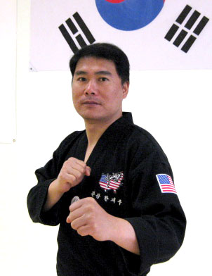

7th Dan black belt, Grand Master Cho has been practicing Taekwondo for over 25 years. He has instilled honor, discipline, courage and perseverance to his students.
Master Cho has dedicated to the advancement of Martial Arts Since 1979 and has been teaching and helping others achieve their dreams and goals since 1990.
Master Cho, is a very goal oriented individual holding belts in many Martial Arts. As well as being a accredited Provincial, National and International competitor, trainer and Olympic coach.
Master Cho's teaching philosopy is that true Taekwondo education must include not only physical techniques but also philosophical knowledge so that training results in a healthy body, mind, spirit and character.
Through his work over the years, he has built a rapport with current athletes as well as the other coaches across the world. As a result of these relationships, he has also been able to extend his current knowledge base
and work within the framework of the National Sports Organization. Currently, the athletes he works with on a day-to-day basis are monitored by in depth reporting from both the athlete and the coach perspectives. This has led him to work through the
Nationl Coaching Certification Program much more efficiently. He has also been involved in future coach development including a mentorship program with two up and coming female coaches. This has been an opportunity for him to not only refine his knowledge base,
but also to focus on communicating this knowledge effectively. Beginning in 1998, Master Cho began coaching at a national level within Canada. He has been able to watch athletes he has worked with succeed all the way to the Olympic level.
Since 2003 Master Cho has been selected to coach at international events as a part of Team Canada. Having been an athlete as well, he has been able to foster strong relationships with the athletes he has had the pleasure of working with.